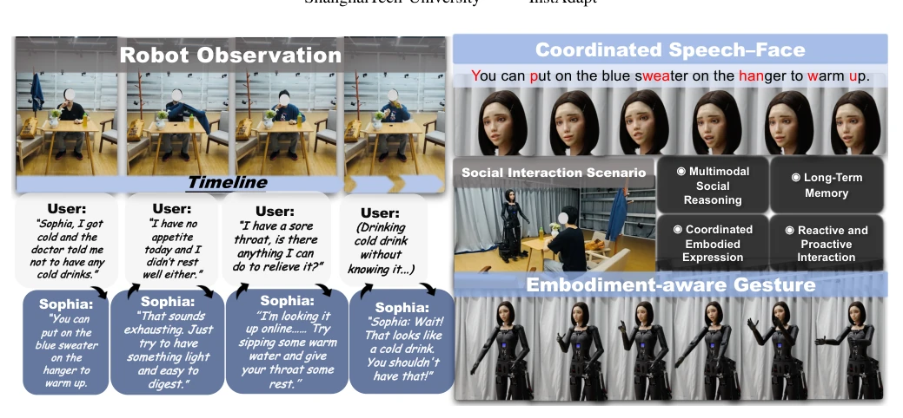
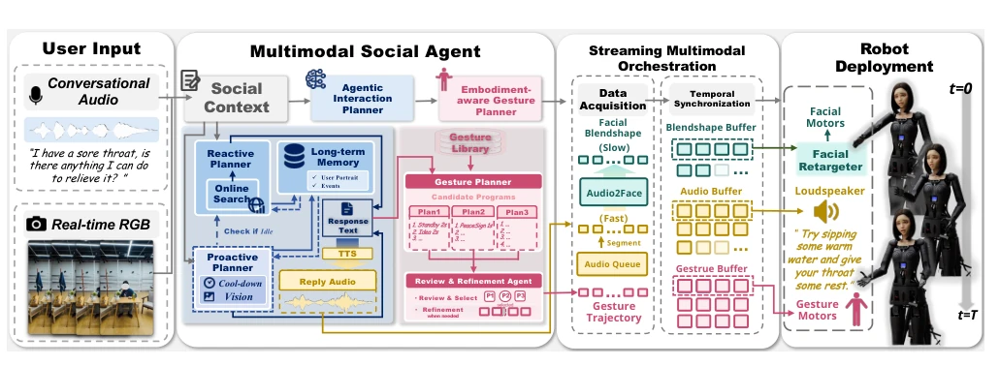
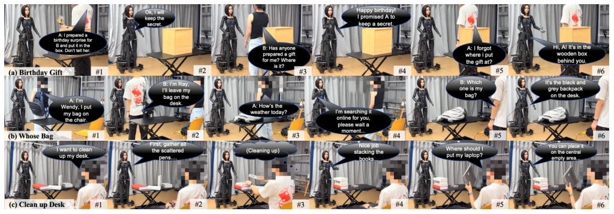
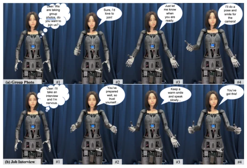
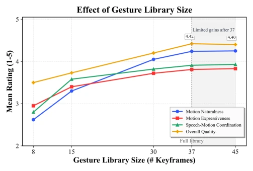

This paper delivers a lesson to the embodied social robotics community: having a brain (LLM) alone is insufficient; you also need hands and feet (actuators) and a face (expressions), and they must be well-coordinated. The ARISE framework achieved a leap from "socially anxious" to "socially confident" on the Sophia robot, not only remembering the user said "I have a cold" in the previous turn but also proactively reminding "don't drink cold drinks"; this "meddlesome" proactiveness is indeed scarce in social robots. However, the authors hyped "streaming processing" as miraculous, yet the latency remained over 5 seconds; for chatbots pursuing "instant replies", this reaction speed can only be considered "slow-to-warm-up". Additionally, the richness of mechanical facial expressions is limited by hardware; no matter how good the algorithm is, it cannot save a "frozen face"; this criticism is undeniable. Overall, this is a solid work that truly connects "think, speak, do", but it is still far from true "naturalness", after all, robots still need to learn not to suddenly "stutter" when the user is speaking.
Existing social robot research suffers from a severe "fragmentation" phenomenon: Agents based on foundation models (such as Generative Agents [21], M3-Agent [9]), while possessing powerful reasoning and memory capabilities, lack physical entities and cannot perform non-verbal communication; while virtual humans (such as EMAGE [1], MIBURI [3]) have smooth movements, they are limited to virtual spaces and cannot cope with real physical constraints. Regarding physical robots, early works such as Aly and Tapus [4] or ExFace [6] often focus on single modalities (e.g., only face or only gestures), lacking a unified framework. ProAct [8] attempted to combine memory and action, but failed to achieve fine coordination among speech, face, and gestures. This paper aims to solve this pain point: how to make physical robots not only "understand" social context (Reactive/Proactive) but also "act" naturally (Coordinated Embodiment), filling the missing closed loop from social reasoning to embodied interaction.

Fig. 1. Illustration of ARISE. Given robot observations and multi-round user interaction, Sophia integrates visual understanding, long-term interaction context, proactive engagement, robot-native gesture planning, and coordinated speech–face–gesture execution to produce context-aware embodied responses.
The ARISE framework adopts a layered architecture, with the core being the decoupling of "semantic planning" and "streaming orchestration". First, the Multimodal Social Agent acts as the brain, receiving audio and visual inputs, combining long-term memory (Long-term Memory) and online retrieval, and using the Agentic Interaction Planner to decide "what to say" and "when to say" (supporting proactive interaction based on visual cues). Second, the Embodiment-aware Gesture Planner converts social intentions into executable symbolic gesture programs; it does not directly generate continuous actions but combines candidate sequences from a semantic keyframe library (Semantic Keyframe Library), and introduces a Review-and-Refinement Agent for semantic adaptation and feasibility verification to ensure actions comply with robot physical constraints. Finally, the Streaming Multimodal Orchestration module is the "director"; it uses the audio-face stream as a time base to stream-synchronize speech, facial Blendshapes, and gesture trajectories, solving the high latency problem caused by traditional serial processing. The Robot Deployment layer is responsible for mapping symbolic instructions to specific motor controls of the Sophia robot. The entire process achieves an end-to-end closed loop from multimodal perception to coordinated execution of speech, expressions, and actions.

Fig. 2. Overview of ARISE. Given conversational audio and real-time RGB observations, the Multimodal Social Agent performs reactive and proactive planning with long-term memory and online search, generating a verbal response and symbolic gesture plan. Streaming Multimodal Orchestration synchronizes speech, facial animation, and gestures for progressive execution, and Robot Deployment maps the coordinated outputs to robot’s actuators.
实验Experiments
研究在Sophia机器人上进行了三项评估。Q1多轮交互实验显示，完整系统在所有指标（OIQ, CA, CC, IE）上均显著优于消融版本，特别是移除视觉输入导致情境适宜性（CA）大幅下降，证明视觉对理解社交语境至关重要；移除长时记忆则削弱了上下文连贯性。Q2手势生成实验表明，多候选生成加审查机制（Review-and-Refinement）显著提升了动作自然度和表现力，优于直接生成单候选或EMAGE [1]基线。Q3延迟评估显示，流式编排将端到端延迟从13.85秒（串行处理）降至5.21秒，大幅提升了响应速度。此外，手势库规模实验发现，37个关键帧时效果最佳，进一步增加收益边际递减。
The study conducted three evaluations on the Sophia robot. Q1 multi-turn interaction experiments show that the complete system significantly outperforms the ablation versions on all metrics (OIQ, CA, CC, IE); specifically, removing visual input caused a significant drop in Context Appropriateness (CA), proving vision is crucial for understanding social context; removing long-term memory weakened contextual coherence. Q2 gesture generation experiments indicate that multi-candidate generation plus review mechanism (Review-and-Refinement) significantly improved action naturalness and expressiveness, outperforming direct single-candidate generation or EMAGE [1] baseline. Q3 latency evaluation shows that streaming orchestration reduced end-to-end latency from 13.85 seconds (serial processing) to 5.21 seconds, significantly improving response speed. Additionally, gesture library size experiments found that 37 keyframes yielded the best results, with further increases showing diminishing marginal returns.

Fig. 3. Multi-round Interaction Sequences (a) Birthday Gift: Sophia preserves confidential information for individual users and remembers the gift’s specific location. (b) Whose Bag: Leveraging visual perception to distinguish different users and backpacks, Sophia recalls object-user associations and answers identity-related queries. (c) Clean up Desk: Sophia can offer appropriate contextual guidance for object placement, and give positive feedback proactively after the user finishes the task.

Fig. 4. Gesture Generation Sequences (a) Group Photo: The robot actively responds to social invitations and cooperates for group-photo scenarios. (b) Job Interview: Detecting user nervousness, Sophia delivers comforting verbal feedback and appropriate expressive gestures.

Fig. 5. Effect of gesture library size on user-rated motion quality. Library size is measured by the number of semantic keyframes. The scores increase substantially as the library grows from 8 to 37 keyframes, while the gain becomes marginal when further expanded to 45 keyframes.